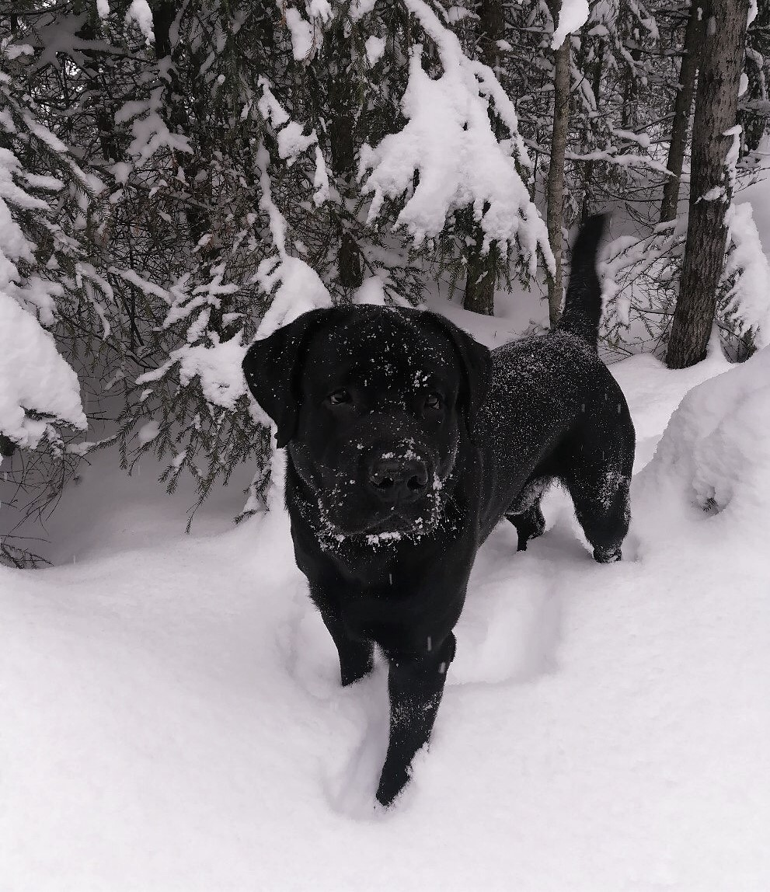

Ilia Savolainen
Yleistä
Kotoisin Venäjältä Pietarista. Olen inkerinsuomalainen. Muutin äitini kanssa Suomeen 15-vuotiaana syksyllä 2013. Valmistuin vain 8 luokkaa Venäjällä, keskikoulu valmistuin jo Suomessa, kesällä 2017 menin opiskelemaan ammattiin kouluun ICT-asentajaksi. Olen positiivinen, ystävälinen, vastuunalainen, tarkkaavainen, helposti koulutettava, ei huonoja tapoja.
Harrastukset
Kun ensimmäinen tietokone ilmestyi perheelleni,
olin sitten 7-vuotias, tajusin, että haluan ymmärtää tietokoneita
ja tekniikkaa yleensä, olen kiinnostunut kaikesta tietokoneeseen liittyvästä asiasta
(tietokoneen komponenttien kokoaminen, ohjelmoinnista, peleistä)
Kokoin ensimmäisen tietokoneeni itse, jota käytän edelleen.

Minulla on koira, sen nimi on Steffan, jonka kanssa kävelen joka päivä.
Minulla on myös pyörä, jolla ajan Jyväsjärven ympäri.

Pelaan tietokonepelejä, lähinnä yksinpelien projekteja,
mutta joskus pelaan myös yhteistyöpelejä ystävien kanssa.
{kind=link}
{kind=link}
{kind=link}
Portfolio
Työkokemus
06/2019—07/2019 Mosaiikki ry (verkkosivujen pelit testaus, verkon kokoonpano,
verkkosivusto
testaus,
tietokoneen korjaaminen)
06/2015 — 08/2015 Jyväskylän Jakelut Oy (Jakelutyö)
Kielitaito
Venäjä: äidinkieli, erittäin hyvä
Suomi: vieras kieli, hyvä
Englanti: toinen vieras kieli, hyvä
Tietotekniikkatiedot
Hyvät taidot:
MS Office, Word, Excel, Access, Power Point
Kortit:
Ensiapu, sähkötyöturvallisuus, tulityökortti, työturvallisuuskortti
Ajokortti: B
| Koulutus | Vuosi |
|---|---|
| Gradia Jyväskylä ICT (Tieto- ja tietoliikennetekniikka perustutkinto) + Lukio, eli kaksoistutkinto | 08/2017—05/2020 |
| Walma Jyväskylä | 01/2017—05/2017 |
| Oksa koulu (Aikuisten perusopetus) | 08/2015 – 12/2016 |
| Palokan peruskoulu Jyväskylä | 10/2013—05/2015 |
| Peruskoulu Pietari | 09/2005—5/2013 |